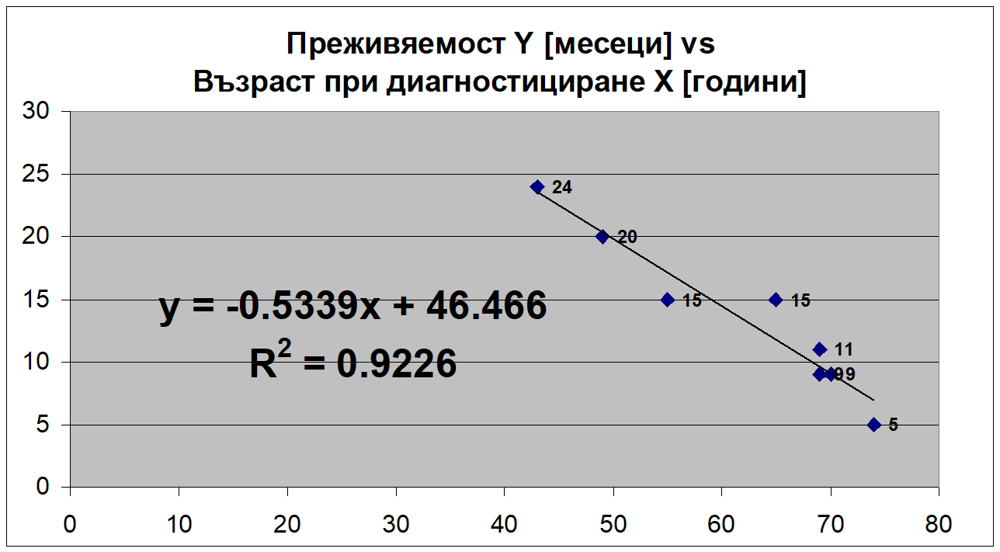
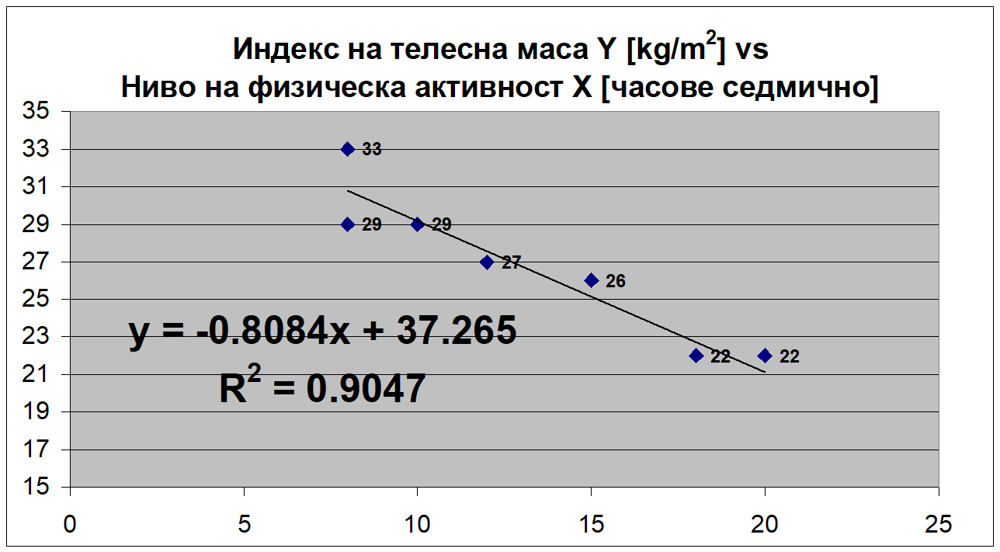
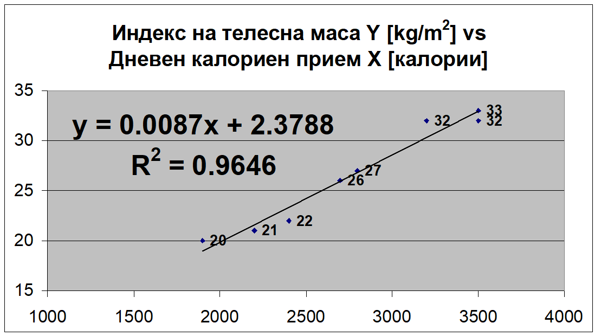

Регресионен анализ. Линейна регресия
Същност на регресионния модел
Когато две променливи са свързани (в корелация помежду си, било то положителна или отрицателна), познаването на стойността на едната променлива позволява да предскаже, сравнително точно, стойността на другата. Това позволява да се правят полезни прогнози. Подобни “модели” са изключително важни в епидемиологията и клиничната медицина, а най-често използваният метод за тяхното създаване е линейната регресия.
Променливата, чиито стойности се предсказват в регресионния модел се нарича зависима (резултативна), докато променливата, която се използва за предсказване и построяването на модела се нарича независима (факторна). В своята същност, регресионния анализ достига до “уравнение” (математическа функция) чрез което в аналитичен вид се представя връзката между определен набор от фактори и резултативното явление. Регресионното уравнение се представя като:
\[{y} = {a} + {\beta}\cdot{x}\]
Нека приемем за зависима променлива \(y\) - тегло на студентите от 2-ри курс, а за независима \(x\) - калорийния им прием. Чрез линейната регресия връзката между тези променливи може да се моделира, така че при известни стойности за калорийния прием, да предскажем теглото на студента. Регресионният модел следва формулата: \({y} = {a} + {\beta}\cdot{x}\), в която:
- Коефициентът \({a}\) е константа (intercept).
Стойността коефициента показва, какво е теглото, когато калорийният прием е нула. С други думи, \({a}\) посочва началната точка на взаимовръзката между тегло и калорийния прием и на практика, няма практическо значение в интерпретацията на модела, тя служи единствено за математическото моделиране.
- \({\beta}\) е регресионният коефициент.
Това е число, което показва силата и посоката на връзката между предиктора (калорийния прием) и резултативната променлива (теглото). Математически, за установяване на стойността на \(y\), трябва да умножи регресионния коефициент \({\beta}\) с известната стойност калорийния прием \(x\). Отрицателните стойности на \({\beta}\) означават негативна (обратна) корелационна връзка, а позитивните стойности - позитивна (права).
Регресионно моделиране
Създаването на линеен регресионен модел протича в следните стъпки:
- Избор на зависима и независима променлива;
- Изчисляване на регресионния коефициент \({\beta}\)
- Изчисляване на сумата на стойностите на променливите \(x\) и \(y\), както и сумата на всички произведения между на \(x\) по \(y\) за всяко едно наблюдение;
- Сбор на повдигнатите на квадрат стойности на променливата \(x\) и умножение на получената сумата с броя на наблюденията;
- Изчисляване на константата \({a}\)
- Изчисляване на средната стойност на променливата \(y\);
- Изчисляване на средната стойност на променливата \(x\);
- Интерпретация на модела.
За да се представят етапите в тяхната последователност, се използва следния пример
Проучване измерва степента на тревожност сред 10 студенти в специалност “медицина”, посредством въпросник със скала от 0 (най-ниска степен на тревожност) до 100 (най-висока степен на тревожност). Изследователският екип записва резултата от теста, както и времето (в минути) прекарано в четене по статистика в предходния ден за всеки един участник. Целта на изследването е да се построи линеен регресионен модел за предсказване на тревожността на студентите \(y\) въз основа на времето прекарано в четене \(x\).
Избор на зависима и независима променлива
Изходните данни са представени в Таблица 1 и на Фигура 1. Променливата тревожност e зависима, това означава, че изградения модел ще се опитва да предскаже стойността на тревожността във основа на променливата учене по статистика, която е независима или факторна.
| \({y}\) Тревожност (0 до 100) | \({x}\) учене по статистика (минути) |
|---|---|
| 21 | 45 |
| 84 | 90 |
| 14 | 20 |
| 95 | 120 |
| 84 | 100 |
| 32 | 62 |
| 59 | 70 |
| 43 | 69 |
| 71 | 85 |
| 4 | 15 |
Изчисляване на регресионния коефициент бета
В числител:
- \({n}\) е броят на наблюденията;
- \({\sum{X}}\) е сумата от стойностите на независимата променлива \({x}\);
- \({\sum{Y}}\) е сумата от стойностите на зависимата променлива \({y}\);
- \(\sum{(X.Y)}\) е сумата от всички произведения на стойностите на \({x}\) по стойностите на \({y}\) за всяко едно наблюдение.
В знаменателя:
- \({n}\) е броят на наблюденията;
- \({\sum{X^2}}\) е сумата от квадратите на стойностите на независимата променлива \({x}\);
- \({(\sum{X})^2}\) е квадратът на сумата от стойностите на независимата променлива \({x}\).
За изчисление на този коефициент се ползва формулата:
\[ {\beta}= \frac{({n}\cdot{\sum{({X}\cdot{Y}})})-(\sum{X}\cdot{\sum{Y}})}{({n}\cdot{\sum{X^2}))}-{(\sum{X})^2}}\]
Изчисляване на сумата на стойностите на променливите \(x\) и \(y\), както и сумата на всички произведения между на \(x\) по \(y\) за всяко едно наблюдение;
В тази стъпка е необходимо да установи сборът на всички наблюдения за двете променливи. След това е необходимо да се установи сумата \(\sum{(X.Y)}\) от произведенията на стойностите на променливите \({x}\) по \({y}\) - за за всеки един студент. Резултатите са представени таблично в Таблица 2.
| \({y}\) Тревожност | \({x}\) учене | \({x}\cdot{y}\) |
|---|---|---|
| 21 | 45 | 945 |
| 84 | 90 | 7560 |
| 14 | 20 | 280 |
| 95 | 120 | 11400 |
| 84 | 100 | 8400 |
| 32 | 62 | 1984 |
| 59 | 70 | 4130 |
| 43 | 69 | 2967 |
| 71 | 85 | 6035 |
| 4 | 15 | 60 |
| \(\sum{Y}=507\) | \(\sum{X}=676\) | \(\sum{(X.Y)}=43761\) |
В резултат от тази стъпка се установява числителят в формулата за изчисляване на регресионния коефициент \({\beta}\)
\[({n}\cdot{\sum{({X}\cdot{Y}})})-(\sum{X}\cdot{\sum{Y}})=10\cdot{43761}-676\cdot{507}=437610-342732=94878\]
Сбор на квадратите за променливата \(x\)
В тази стъпка се повдигат на квадрат всички стойности на променливата \({x}\), след което се сумират. Резултатът е представен в Таблица 3.
| \({x}\) учене по статистика (минути) | \({x^2}\) |
|---|---|
| 45 | 2025 |
| 90 | 8100 |
| 20 | 400 |
| 120 | 14400 |
| 100 | 10000 |
| 62 | 3844 |
| 70 | 4900 |
| 69 | 4761 |
| 85 | 7225 |
| 15 | 225 |
| \(\sum{x}=676\) | \(\sum{x^2}=55880\) |
В края на втора стъпка получаваме знаменателя в формулата за изчисляване на регресионния коефициент \({\beta}\)
\[({n}\cdot{\sum{X^2}})-{(\sum{X})^2}=10\cdot{55880}-676^2=558800-456976=101824\]
Изчисляване на регресионния коефициент \({\beta}\)
След като сме установили числителя и знаменателя заместваме във формулата:
\[ {\beta}= \frac{({n}\cdot{\sum{{X}\cdot{Y}}})-\sum{X}\cdot{\sum{Y}}}{{n}\cdot{\sum{X^2}}-{(\sum{X})^2}}\]
\[ {\beta}= \frac{94878}{101824} = 0,93\]
Изчисляване на константата \({a}\)
Където:
- \({\bar{y}}\) е средната стойност на зависимата променлива \({y}\);
- \({\bar{x}}\) е средната стойност на независимата променлива \({x}\).
- \({\beta}\) е регресионният коефициент.
- \({a}\) е константата.
За изчисляване на константата използваме формулата:
\[{a}={\bar{y}}-({\beta}\cdot{\bar{x}})\]
Изчисляване на средната стойност на зависимата променлива \({y}\)
За да изчислим средната стойност на зависимата променлива \({y}\) ползваме формулата за средна аритметична:
\[{\bar{y}}=\frac{\sum{Y}}{n}\]
\[{\bar{y}}=\frac{507}{10}=50,7\]
Изчисляване на средната стойност на независимата променлива \({x}\)
Отново прилагаме формулата:
\[{\bar{x}}=\frac{\sum{X}}{n}\]
\[{\bar{x}}=\frac{676}{10} = 67,6\]
Изчисляване на константата \({a}\)
Заместваме в израза за константата: \[{a}={\bar{y}}-({\beta}\cdot{\bar{x}})\]
\[{a}=50,7-(0,93\cdot{67,6})\] \[{a}=-12.2\]
Интерпретация:
- Регресионният коефициент е позитивно число - това означава, че увеличаването на времето в четене по статистика, се свързва с увеличение на тревожността. Връзката е сравнително силна, като увеличение с една минута четене води до увеличение с 0,93 точки в теста за тревожност;
- Константата “а” има значение единствено като “начална точка”. Това число показва стойността на зависимата променлива (тревожност), ако фактора (време прекарано в четене) е равен на 0.
Математически моделът се представя като:
\[{y} = {a} + {\beta}\cdot{x}=-12,2+0,93\cdot{x}\]
Регресионно прогнозиране (използване на модела за предсказване)
Да приемем, че нов студент се премести в групата. Знаейки само колко време чете по статистика е необходимо да преценим, какъв би бил резултатът му от теста за тревожност. Да приемем, че студентът е споделил, че прекарва в четене 30 мин на ден. Прилагаме модела 1:
\[{y} = {a} + {\beta}\cdot{x}=-12,2+0,93\cdot{x}\]
За новия студент \({x}=30\) минути. Заместваме в уравнението: \[{y} =-12,2+0,93\cdot{30}=16\]
Оценка на регресионния модел
Всеки регресионен модел се оценява спрямо способността му да предсказва правилно. Тази оценка се извършва чрез показателя коефициент на определеност (детерминирания)- \({R^2}\). Този коефициент:
- Има стойности между 0 и 1 (0 и 100%);
- Определя силата на модела - способността му да предсказва правилно;
- Показва каква част от вариацията на зависимата променлива се обяснява от вариацията на независимата променлива;
- Позволява да се оцени коефициентът на корелация, чрез формулата:
\[{|r|=\sqrt{R^2}}\]
В посоченият по-горе пример, ако приемем, че коефициентът на детерминирания е 0,93, това означава, че 93% от вариацията в тревожността в групата се обяснява следствие на вариацията в времето за четене по статистика. Двете променливи са в права (позитивна) корелационна връзка, чиито коефициент е:
\[{|r|=\sqrt{R^2}}=\sqrt0,93=\pm 0,946\]
Общо правило за интерпретация на регресията:
- Регресионният коефициент \({\beta}\), показва, как се променя резултатът (зависимата променлива) при една единица повишаване на фактора (предиктора).
- Позитивен регресионен коефициент означава позитивна корелационна връзка между фактора и резултата. Обратно, негативен регресионен коефициент означава обратна (негативна) връзка между фактора и резултата.
- \({R^2}\) представя какъв дял от вариацията на резултативната променлива се дължи на изследвания фактор.
- Когато коренуваме стойността на \({R^2}\) получаваме абсолютната стойност на корелационния коефициент \(\sqrt{R^2}={|r|}\).
- Знакът + или - пред коефициентът на корелация се определя от знака пред регресионния коефициент \({\beta}\).
Още малко за регресията
Представения до момента регресионен модел съдържа само една “обясняваща” променлива. Затова такива модели се означават като “еднофакторни”.В действителност, за да обясним една променлива, често се използват множество предиктори (независими променливи). Всеки един от тях има собствен регресионен коефициент. В тези случай често се наблюдава статистическия феномен “колинеарност”. При него две или повече независими са в силна корелационна връзка помежду си, при което тяхната способност да предсказват зависима променлива намалява.
Тестове и задачи
Задача 1
Данните регистрирани в таблицата по-долу са на пациенти, участници в проучване на коронарната болест на сърцето. Изградете регресионен модел с който да предскажете стойността на холестерола в кръвта на пациентите спрямо теглото им.
| Тегло (кг) | Холестерол (мг/дл) |
|---|---|
| 84 | 135 |
| 107 | 222 |
| 94 | 244 |
| 83 | 252 |
| 131 | 269 |
| 72 | 286 |
| 87 | 294 |
| 88 | 302 |
| 77 | 311 |
| 90 | 311 |
| 79 | 312 |
| 82 | 353 |
| 70 | 403 |
| 88 | 403 |
Задача 2
При проучване на нов анестетик е отчетено времето от подаването на медикамента до реакцията на пациента и съответната ефективна доза, определена в мкг/кг. Данните са показани в таблицата по-долу. Изградете регресионен модел с който да предсказвате времето за реакция в зависимост от дозата на медикамента.
| Доза (мкг/кг) | Време (сек) |
|---|---|
| 1,3 | 25 |
| 9 | 13 |
| 1,5 | 19 |
| 1,1 | 23 |
| 1 | 26 |
| 1,3 | 21 |
| 2,1 | 11 |
| 1,7 | 30 |
| 1,6 | 14 |
| 0,9 | 24 |
Тестове
- Множествената (многофакторна) линейна регресия моделира:
- Резултат за 1 независима променлива въз основа на данни за 1 зависима променлива.
- Резултат за 1 зависима променлива въз основа на данни за 1 независима променлива.
- Резултат за 1 независима променлива въз основа на данни за повече от 1 зависими променливи.
- Резултат за 1 зависима променлива въз основа на данни за повече от 1 независими променливи.
- Големият положителен наклон на регресионната крива означава, че:
- корелацията е силна и положителна;
- вертикалното изместване е голямо и положително;
- стойността на У ще се увеличи поне с няколко единици, когато стойността на X се увеличи с една единица;
- всички гореизброени са верни.
- Ако коефициентът на детерминация е положителен, то простата (единична) линейна регресия:
- Има положителен (нарастващ) наклон.
- Има отрицателен (намаляващ) наклон.
- Може да има или положителен, или отрицателен наклон.
- Зависимата променлива Y е отрицателна.
- Каква е целта на простата (единична) линейна регресия?
- Прогнозиране на зависима променлива въз основа на данни за една независима променлива.
- Прогнозиране на независима променлива въз основа на данни за една зависима променлива.
- Прогнозиране на зависима променлива въз основа на данни за повече от една независими променливи.
- Прогнозиране на независима променлива въз основа на данни за повече от една зависими променливи.
- Регресионен коефициент b = 0.85 означава:
- Положителен наклон на правата на най-добро съответствие
- Отрицателен наклон на правата на най-добро съответствие
- Наклонът на правата на най-добро съответствие може да бъде както положителен, така и отрицателен
- Всички отговори са грешни
Отворени въпроси
Какъв извод може да се направи въз основа на регресионния модел, представен на графиката по-долу? Как интерпретираме коефициента на детерминация в този случай? Каква е стойността на коефициента на корелация?



Бележки
Много компютърни програми използват методи подобни на регресията за целите на маркетинга. Някои интернет страници запаметяват последните ви търсения и в основа на данни за вас (независими променливи или фактори) ви “предлагат” определени продукти, които за които има по-голяма вероятност да се интересувате (зависима променлива). В медицината регресия се използва наравно с медицинската слушалка. В кардиологията например рискът от инсулт се изчислява, използвайки именно регресионен модел наречен CHADVAS score↩︎